16 / 32 / 48
Favicon
ICO with three frames. Dark for the sites, light for anything rendered on a warm white ground.
favicon-dark.ico
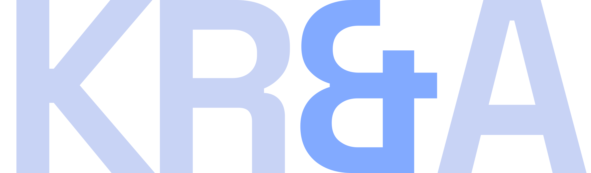
The identity for Kevin Ryan & Associates. One wordmark, one mark, one palette taken from the development environment, and a set of rules that a person or an agent can apply without asking a further question.
Every value in this document is a token, not a description. Where a colour, size or space appears, the token name is printed beside it. Copy the token, not the value.
The palette is not owned here. It is lifted verbatim from the Tokyo Night Moon block in the dotfiles repository, which is the same source the terminal, editor and cluster tooling read. If that block changes, this document changes with it.
The wordmark is KR&A set in Space Grotesk at weight 700, tracked to
-0.05em. All four characters share one weight and one size. The ampersand takes
0.02em of optical padding either side because its bowl sits tighter than the flat sides of
the R and the A.
The ampersand is the only glyph that carries colour. It is what separates the mark from plain text, so it is never dropped, never reweighted and never replaced with the word "and".
Clear space is one cap height of the K on every side. Nothing intrudes into that zone: no rule, no edge, no other mark. The dashed boundary below is drawn to scale.
The wordmark holds down to 68px wide on screen and 18mm in print. Below that the ampersand thins past the point where the colour registers, and the mark reads as plain text. Use the mark instead.
| Property | Value | Token |
|---|---|---|
| Face | Space Grotesk | --font-display |
| Weight | 700, all four characters | 700 |
| Tracking | -0.05em | --track-display |
| Ampersand padding | 0.02em either side | – |
| Letter colour | #C8D3F5 on dark, #222436 on light | --ink, --p-ink |
| Ampersand colour | Section accent | --sec |
| Aspect | 2373 : 700 | viewBox |
| Master format | SVG, outlined paths | .svg |
The page is syntax-highlighted. Each section owns one accent from the ramp and every accented thing
inside it reads from the same variable. The ampersand is one of those things. It inherits
--sec from the section it sits in, so the mark shifts colour as the reader moves down the
page without a single per-page logo asset existing.
Seven accents are in the rotation. The remainder of the ramp is reserved for section furniture and is not used on the mark, because at small sizes yellow and green sit close enough to ink that the ampersand stops reading as accented, and red reads as an error state rather than a section cue.
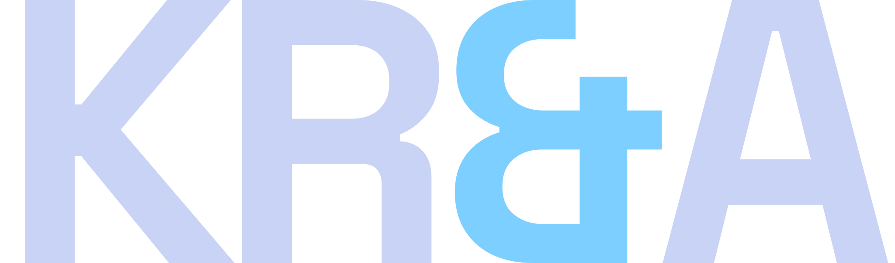
Documentation CYAN1 #7DCFFF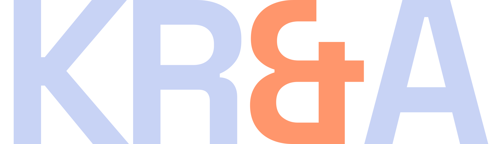
Enterprise delivery, CI and CD ORANGE #FF966C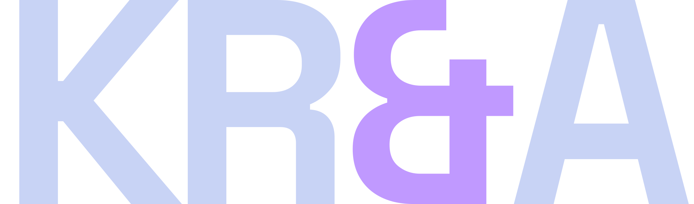
Career arc, decision records MAGENTA #C099FFUse kra-wordmark-live.svg, which fills the letters with currentColor and the
ampersand with var(--sec). Inline it rather than loading it through an img
element, because an external SVG cannot see the page's custom properties. The fixed-colour files exist
for contexts outside the site, not for the site itself.
The mark is a square split on the diagonal. The upper left triangle is ink, the lower right is the accent, and a gap of 6.25% of the mark separates them. The whole figure is inset 16% from the edge of its ground, which is what keeps it legible as a favicon at 16px.
It is not a monogram and carries no letterforms. Where the wordmark is too small to hold, this replaces it: favicons, app icons, avatars, watermarks and anything below 68px wide.
ICO with three frames. Dark for the sites, light for anything rendered on a warm white ground.
PNG on the section ground. Android takes 192, the App Store takes 512.
Square, mark centred at 62% of the frame. LinkedIn, GitHub, Slack.
Transparent ground. Use at reduced opacity over a solid panel, never over a photograph.
One theme. Dark only. There is no light variant, no toggle and no automatic detection. Body text meets 7:1 against its background and muted text meets 4.5:1. Every ratio printed below is measured, not estimated.
The Moon surfaces sit close together, so depth is carried by hairlines rather than by tonal contrast. The sunken surface exists to give alternating sections a visible step where the panel surface would be indistinguishable.
Section ground and page default
Alternating sections, footer, code
Wells, form panels, feature cells
Hover only
Every structural rule, 1px
Table head, field border
Headings, emphasis, figures
Body copy
Labels and metadata. Muted floor
Decorative only. Never type
Decorative only. Never type
Every accent clears 4.5:1 on the section ground except blue 0 and red 1, which are borders and markers and never carry type.
Interaction, cover, contact, top bar
Clients
Borders and markers only
About, infrastructure
Documentation
Capabilities, specifications
Certifications, observability, live state
Published work, sites, draft state
Enterprise delivery, CI and CD
The problem, risk, failure state
Career arc, decision records
Markers only
Every Moon
accent falls below 4.5:1 on warm white, so print takes a darkened set. Hue is held from the Moon value and
lightness is walked down until the colour clears 5.5:1, which is a derivation rather than a choice and can
be rerun from tools/printset.py. Print ink is the site background itself, so the light lockup
stays in the family instead of falling back to black, paired with print blue on the ampersand.
Three families with fixed roles. Space Grotesk for display, headings and names. IBM Plex Sans for reading body only. IBM Plex Mono for all structure: numbers, metadata, tags, buttons, labels and table headers.
Uppercase is set in the mono face and nowhere else. The display and body faces are never uppercased by CSS. All three are self-hosted as woff2. No request leaves the origin to render type, which is a sovereignty requirement rather than a performance one.
Weights 500, 600, 700. Headings, the wordmark, names and figures.
Weights 400, 600. Reading copy only. Never a label, never a number.
Weights 400, 500. Every label, tag, figure, button and table header.
Eleven fixed steps. Two are fluid and clamped. Generated output uses these steps and no intermediate values.
All spacing derives from an 8px scale. An arbitrary pixel value is a defect, not a judgement call. The shell is 1400px with fluid padding, and the cover uses a twelve column grid that collapses to one at 900px.
Border radius is zero on every element without exception. Buttons, fields, panels, pills and images all square.
No shadows, gradients, glows or glass. Depth is expressed with the surface ramp and hairlines only.
Structural lines are 1px. Emphasis edges are 2px and appear only on blockquotes, callout edges, cell hover edges and figure rules.
The dashed border belongs to the empty state and the clear-space diagram. It appears nowhere else.
Nothing animates on entry. Scroll-triggered reveals, marquees and any self-starting animation are prohibited.
Focus is a 2px square ring in the section accent at 3px offset. All motion is suppressed under reduced-motion.
The system is deliberately small. Adding a component is a decision, not a convenience.
| Component | Rule |
|---|---|
| Status pill | Exactly three: live, draft, planned |
| Callout | Left edge and label carry colour. Body stays neutral. No icons |
| Table | No vertical rules, no zebra, no outer border |
| Button | One primary per view |
| Top bar | Left-aligned routes. No wordmark, no progress bar |
| Cell grid | The only card primitive. Two, three or four across |
Non-bloat is a feature. These are not gaps waiting to be filled.
Labels do the work icons would do.
Adopting Tokyo Night Day is a separate decision.
Transitions are CSS and respond to input.
Plain CSS classes, consumable from any renderer.
kra-wordmark-live.svg on the sites so the ampersand inherits the section accent.This identity does not own its colours. They are read from the Tokyo Night Moon block in the dotfiles repository. If that block changes, regenerate the assets and this document rather than editing a hex value in either. The generator lives beside the site.
111 files. SVG is the master format in every case. Rasters are provided for contexts that cannot take vector, and are regenerated from the SVG rather than edited.
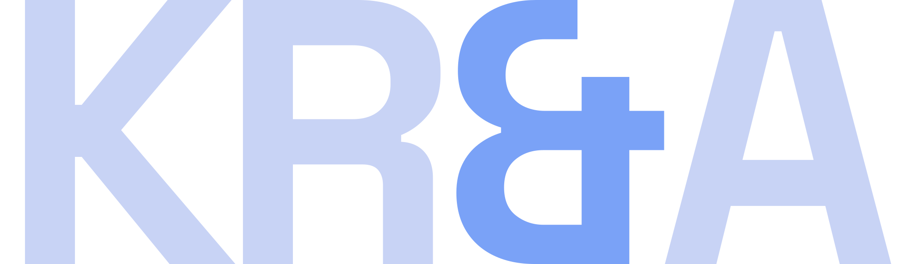
kra-wordmark-blue1.svg Accent on dark 2 KB ↓ kra-wordmark-cyan.svg Accent on dark 2 KB ↓ kra-wordmark-cyan1.svg Accent on dark 2 KB ↓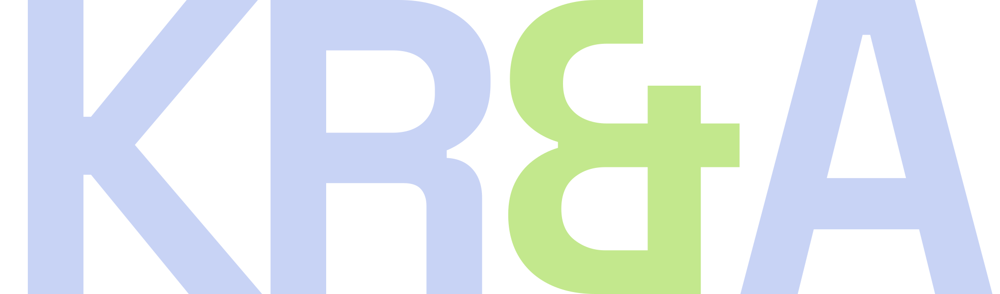
kra-wordmark-green.svg Accent on dark 2 KB ↓ kra-wordmark-ink.svg Neutral on dark 2 KB ↓ kra-wordmark-live.svg Inline, inherits --sec 2 KB ↓ kra-wordmark-magenta.svg Accent on dark 2 KB ↓ kra-wordmark-orange.svg Accent on dark 2 KB ↓ kra-wordmark-print.svg Warm white ground 2 KB ↓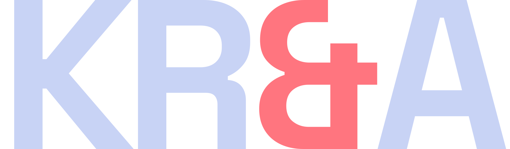
kra-wordmark-red.svg Accent on dark 2 KB ↓ kra-wordmark-teal.svg Accent on dark 2 KB ↓ kra-wordmark-white.svg Single colour, dark 2 KB ↓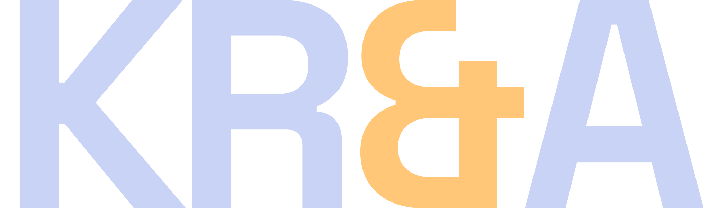
kra-wordmark-yellow.svg Accent on dark 2 KB ↓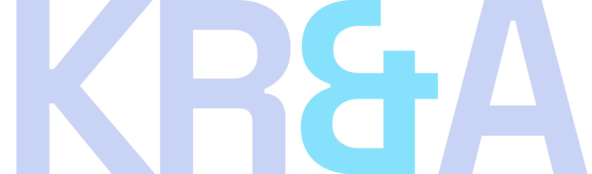
kra-wordmark-cyan-2000.png Raster, transparent 50 KB ↓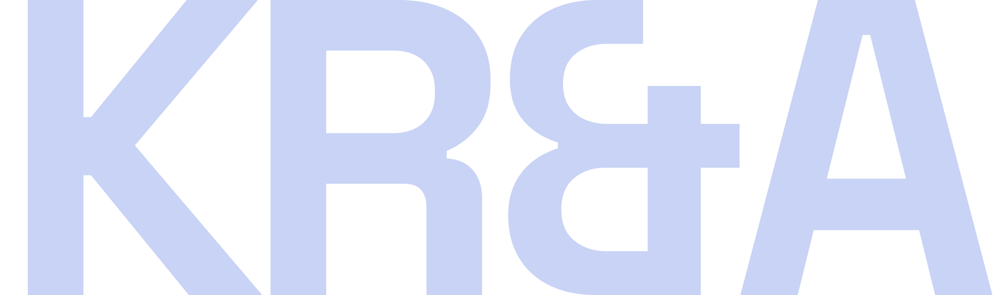
kra-wordmark-ink-2000.png Raster, transparent 50 KB ↓ kra-wordmark-magenta-2000.png Raster, transparent 50 KB ↓ kra-wordmark-orange-2000.png Raster, transparent 50 KB ↓ kra-wordmark-print-2000.png Raster, transparent 50 KB ↓ kra-wordmark-teal-2000.png Raster, transparent 50 KB ↓
kra-wordmark-white-2000.png Raster, transparent 39 KB ↓ kra-wordmark-black-1200.png Raster, transparent 26 KB ↓ kra-wordmark-blue-1200.png Raster, transparent 28 KB ↓ kra-wordmark-cyan-1200.png Raster, transparent 28 KB ↓ kra-wordmark-ink-1200.png Raster, transparent 28 KB ↓ kra-wordmark-magenta-1200.png Raster, transparent 28 KB ↓ kra-wordmark-orange-1200.png Raster, transparent 28 KB ↓ kra-wordmark-print-1200.png Raster, transparent 28 KB ↓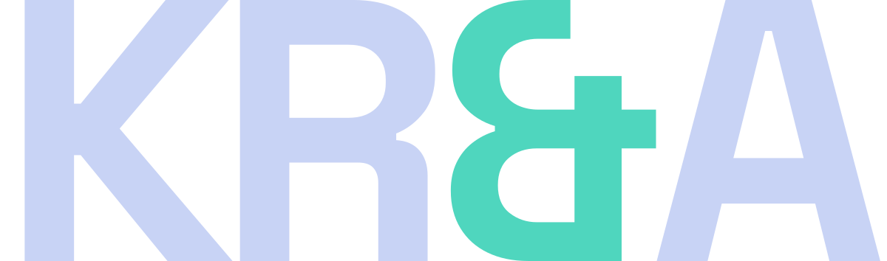
kra-wordmark-teal-1200.png Raster, transparent 29 KB ↓ kra-wordmark-white-1200.png Raster, transparent 22 KB ↓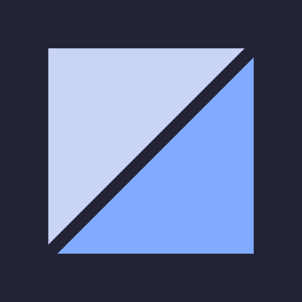
kra-mark-blue-512.png App icon, avatar 3 KB ↓ kra-mark-cyan-512.png App icon, avatar 3 KB ↓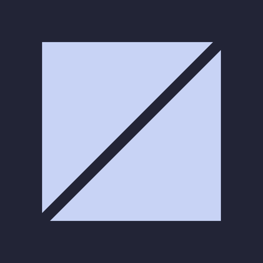
kra-mark-ink-512.png App icon, avatar 3 KB ↓ kra-mark-light-512.png App icon, avatar 3 KB ↓ kra-mark-magenta-512.png App icon, avatar 3 KB ↓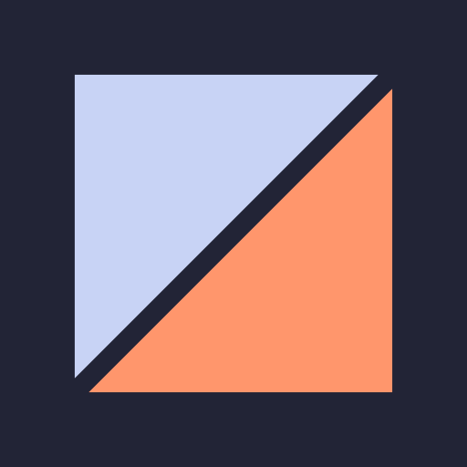
kra-mark-orange-512.png App icon, avatar 3 KB ↓ kra-mark-sink-512.png App icon, avatar 3 KB ↓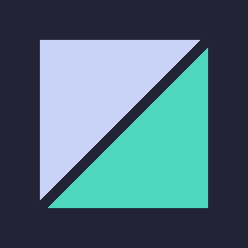
kra-mark-teal-512.png App icon, avatar 3 KB ↓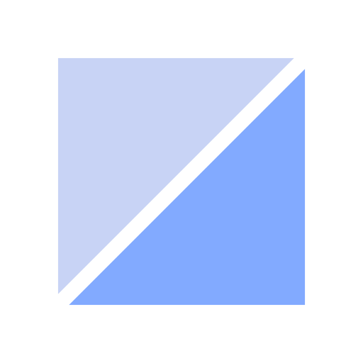
kra-mark-transparent-512.png App icon, avatar 3 KB ↓ kra-mark-blue-192.png App icon, avatar 1 KB ↓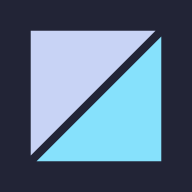
kra-mark-cyan-192.png App icon, avatar 1 KB ↓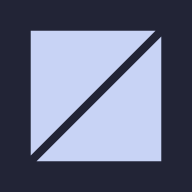
kra-mark-ink-192.png App icon, avatar 1 KB ↓ kra-mark-light-192.png App icon, avatar 1 KB ↓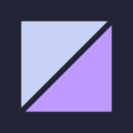
kra-mark-magenta-192.png App icon, avatar 1 KB ↓ kra-mark-orange-192.png App icon, avatar 1 KB ↓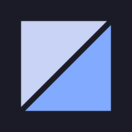
kra-mark-sink-192.png App icon, avatar 1 KB ↓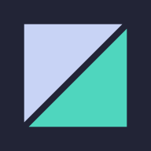
kra-mark-teal-192.png App icon, avatar 1 KB ↓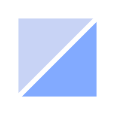
kra-mark-transparent-192.png App icon, avatar 1 KB ↓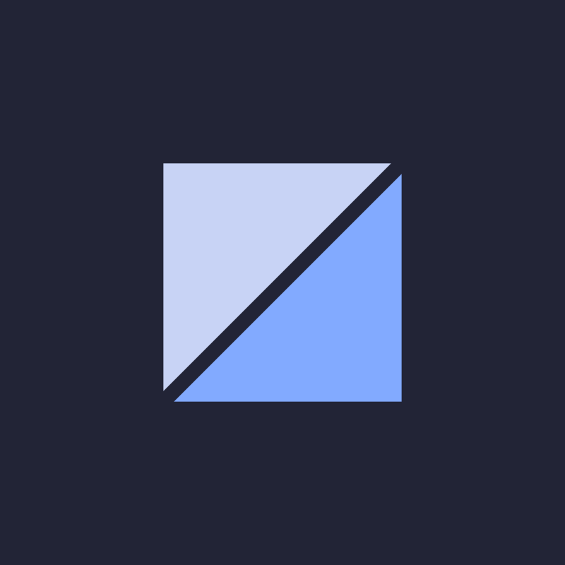
kra-social-dark-800.png Social avatar 5 KB ↓ kra-social-light-400.png Social avatar 2 KB ↓ kra-social-light-800.png Social avatar 5 KB ↓{kind=link}
{kind=link}
{kind=link}
{kind=link}
{kind=link}
{kind=link}
{kind=link}
{kind=link}
{kind=link}
{kind=link}
{kind=link}
{kind=link}
{kind=link}
{kind=link}
{kind=link}
{kind=link}
{kind=link}
{kind=link}
{kind=link}
{kind=link}
{kind=link}
{kind=link}
{kind=link}
{kind=link}
{kind=link}
{kind=link}
{kind=link}
{kind=link}
{kind=link}
{kind=link}
{kind=link}
{kind=link}
{kind=link}
{kind=link}
{kind=link}
{kind=link}
{kind=link}
{kind=link}
{kind=link}
{kind=link}
{kind=link}
{kind=link}
{kind=link}
{kind=link}
{kind=link}
{kind=link}
{kind=link}
{kind=link}
{kind=link}
{kind=link}
{kind=link}
{kind=link}
{kind=link}
{kind=link}
{kind=link}
{kind=link}
{kind=link}
{kind=link}
{kind=link}
{kind=link}
{kind=link}
{kind=link}
{kind=link}
{kind=link}